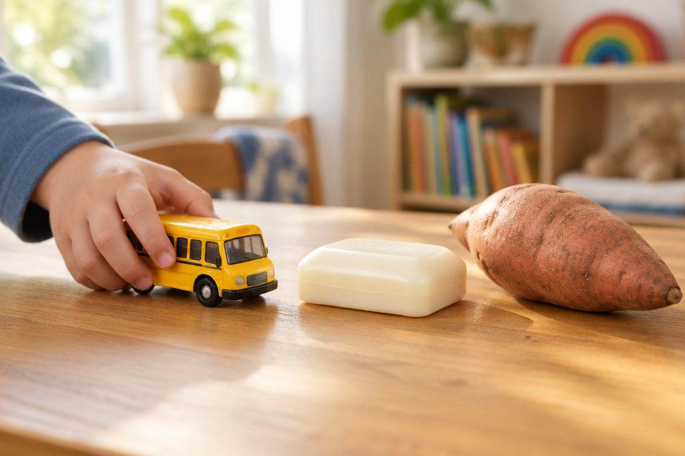

전체 단원 › 1~2학년 › 국어 › 1단계 · 자음 ㅁ ㅂ ㅅ ㅇ
네모 ㅁ, 동그라미 ㅇ은 어떤 소리일까?

"나비"와 "나무"를 읽어 봐요. 지난번에 배운 ㄴ 말고도 새 자음이 숨어 있어요. 오늘은 ㅁ ㅂ ㅅ ㅇ을 만나요.
ㅁ 미음, ㅂ 비읍
ㅁ은 네모 모양이에요. 이름은 '미음'이에요.
ㅁ 위로 줄 두 개를 세우면 ㅂ이에요. 이름은 '비읍'이에요.
둘 다 입술을 붙였다 떼며 소리 내요.
ㅁ+ㅏ=마 · ㅂ+ㅏ=바
ㅅ 시옷
ㅅ은 사람이 걸어가는 모양 같아요.
이름은 '시옷'이에요.
이 사이로 바람을 '스~' 내보내요.
ㅅ+ㅏ=사 · ㅅ+ㅗ=소
ㅇ 이응
ㅇ은 동그라미예요. 이름은 '이응'이에요.
글자 맨 앞의 ㅇ은 소리가 없어요.
그래서 '아'는 모음 소리만 나요.
ㅇ+ㅏ=아 · ㅇ+ㅣ=이
낱말을 읽어요
지금까지 배운 자음 여덟 개로 낱말을 읽어요.
한 글자씩 천천히 읽어 봐요.
나무 · 나비 · 바다 · 버스 · 모기 · 고구마
핵심 낱말
- 미음 · 비읍
- ㅁ과 ㅂ의 이름이에요. 입술을 붙였다 떼며 내요.
- 시옷
- ㅅ의 이름이에요. 이 사이로 바람이 나와요.
- 이응
- ㅇ의 이름이에요. 글자 맨 앞에서는 소리가 없어요.
꼭 알아야 할 표현
| 미음 | 자음 ㅁ의 이름 | |
| 비읍 | 자음 ㅂ의 이름 | |
| 시옷 | 자음 ㅅ의 이름 | [시옫] |
| 이응 | 자음 ㅇ의 이름 | |
| 마 바 사 아 | ㅁ ㅂ ㅅ ㅇ에 ㅏ를 붙인 글자 | |
| 나무 | 🌳 땅에 뿌리를 내린 큰 식물 | |
| 나비 | 🦋 날개가 예쁜 곤충 | |
| 바다 | 🌊 넓고 짠 물 | |
| 버스 | 🚌 많은 사람이 타는 차 | |
| 모기 | 🦟 피를 빠는 작은 곤충 | |
| 고구마 | 🍠 땅속에서 자라는 달콤한 먹을거리 |
한 줄 정리
- ㅁ 미음, ㅂ 비읍, ㅅ 시옷, ㅇ 이응.
- ㅁ 위로 줄 두 개를 세우면 ㅂ이 돼요.
- 글자 맨 앞의 ㅇ은 소리가 없어요.
학교 교육과정 연결
- [2국04-01] 한글 자모의 이름과 소릿값을 알고 정확하게 발음하고 쓴다.